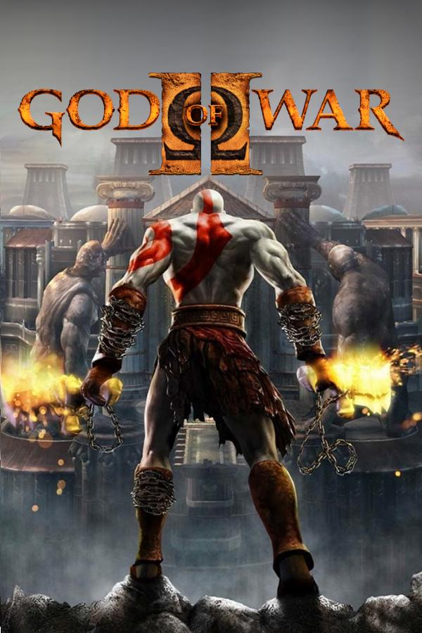

<!DOCTYPE html>
<html lang="en">
<head>
    <meta charset="UTF-8">
    <meta name="viewport" content="width=device-width, initial-scale=1.0">
    <link rel="stylesheet" href="css/estilos.css">
    <title>Jueguitos.com</title>
    
</head>

</html>


    <body>

        <header>
            
            <h1>Jueguitos</h1>
            <p>Jueguitos es una pagina en la que podra revisar mi opinion personal de mis dos <br>video juegos favoritos y los dos video juegos que recomiendo</p>
            <nav>
                <ul>
                    <li><a href="registro.html">Registro</a></li> 
                </ul>
            </nav>
        </header>

        <main>
            <section id="favoritos">
               
                <article>
                    <h1>Favoritos</h1>
                    
                    <h2>The Last of Us</h2>
                    

                    <p>en septiembre de 2013 se desata una pandemia en Estados Unidos ocasionada por una cepa del hongo Cordyceps, que al infectar a los humanos <br>
                        los convierte en criaturas caníbales, y que se transmite a través de una simple mordedura.</p>
                   

                </article>

                <article>
                    
                    <h2>God of War</h2>
                   

                    <p>Tras los acontecimientos del primer God of War, Kratos está al frente de su ejército espartano con el objetivo de conquistar Grecia. <br>
                        Si bien lucha junto a sus guerreros, es atacado por un número de criaturas dirigidas por el gigante Argos, que es enviado por <br>
                        Hera para detener la guerra que él está llevando a cabo.</p>
                </article>

            </section>

            <section id="destacados">
                
                <article>
                    <h1>Destacados</h1>
                    
                    <h2>Recomendacion 1: Red Dead Redeption</h2>
                   
                    <p>1899, la era del salvaje oeste estaba muriendo; esto debido a un nuevo gobierno cuya prioridad principal era dedicarse a crear una sociedad más segura dotada de leyes y, para ello,<br> comenzarían a liquidar a todas las bandas de forajidos que representaran un problema para la nación.</p>
                    <p><strong>Criterio:</strong>  es considerado por muchos como uno de los mejores videojuegos de la historia en varios aspectos! Su impresionante logro en gráficos, jugabilidad, historia y <br>personajes lo ha convertido en una experiencia memorable para los jugadores</p>

                </article>

                <article>
                    
                    <h2>Recomendacion 2: Marvel Spiderman 2</h2>
                    
                    <p>La acción transcurre dos años después de que el joven neoyorquino Peter Parker acallara su amor hacia Mary Jane Watson <br>para dedicarse en cuerpo y alma a ser Spider-Man. Ahora, Peter, mientras sigue ayudando a <br>la policía como Hombre Araña, trabaja como repartidor de pizzas para poder pagarse sus estudios universitarios.</p>
                    <p><strong>Criterio: </strong>Su historia con dos Spider-Man es el sueño de los fans de Peter y de Miles, en un entorno que <br>nos hace sentir que las páginas de los cómics cobran vida, en una historia que mezcla a la <br>perfección el humor, el drama y la acción</p>
                    
                </article>
            </section>

        </main>

        <footer>
            <p>Derechos de autor © 2024 Jueguitos. Todos los derechos reservados.</p>
            <a href="https://www.facebook.com/debora.brar/about">Facebook</a>
            <a href="https://www.instagram.com/nene_2603?igsh=c3V3MmRlZGwwMDBo&utm_source=qr">Instagram</a>
            
        </footer>
    </body>
    </html>
   
</head>

</html>